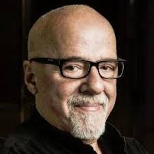

. A quote from that book caught my eye then and has stayed with me till now, inspiring me through all walks.
. A quote from that book caught my eye then and has stayed with me till now, inspiring me through all walks.
I am Shwetha S Kumar ,a first year Btech student of Production Engineering in National Institute of Technology, Tiruchirappalli. (www.nitt.edu) Born in Trivandrum,Kerala and brought up in Kolkata,West Bengal I am pretty much a true Indian-mix of both South Indian and North Indian cultures.My hobbies include
1.sketching
2. swimming
3.collecting postage stamps,antique items,coins,etc..
I am an optimistic ,dedicated ,ambitious and hardworking person who puts her heart and soul into achieving her goals. However, I am a bit reserved, dont generally mix freely and take time to open up to people. A non-vegetarian,Chinese was my favourite cuisine and I anyday preferred junk food like burgers and pizzas over all other food items till college happened and hostel life taught me the importance of home-made food. I do read books in my free time though I am not exactly an avid reader. My favourite author is Paulo Coelho and my favourite book is The Alchemist. A quote from that book caught my eye then and has stayed with me till now, inspiring me through all walks.
My interest in the field of computers was awakened in class IX when we were taught Java as part of our course in school. However, since I had initially aimed to become a doctor, I opted for Biology in class XI and lost all touch with computer science. Fate had other plans and destiny introduced me to engineering and since I got an opportunity to work with computers once again I decided to pursue my interest in coding and algorithm. Clubs such as Spider, Delta, etc. in our college provide a very good platform for students like me to hone our skills in coding and improve our knowledge. I love science and technology and wish to be always connected with it in some way or the other. I plan to pursue research after college and aim to use my knowledge for the betterment of society and mankind. I am particularly interested in Physics and Computer Science and hope to use my skill and knowledge to serve the nation.
Thats pretty much all there is to know about me.